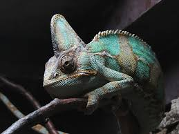

From PICRYL Made by uknownCameleons are my favorite lizard and my favorite animal. I will talk about Chameleon facts, types of chamemlons, and why i like chamelons. I hope you like this page and will have you learn more and like chameleons more.
Chameleons are strange creatures, they do weird stuff, and they look weird. If you don't know a lot about chameleons you are at the right place. The weirdest thing they do in my opinion is how they can move their eyes in all diractions, thats not the weird thing its how they can move one of their eyes in a different directoin than the other. Thats cool but also weird to look at. The most know thing about chameleons is how the can change color. Do you wonder why chameleons change color. They change colors to help them alter their body tempreture, commuinicate, and to show their emotions. Imagine if you could change colors, you'd be so cool, it would be like you have a superpower. A useful thing they can do is they use their long tail to act like another limb so they can balence better. That is really useful to them because they live on trees and that would be hard to get around without a tail.The most gross in my opinion is their toungue. It is gross because it is very long. Although its gross it is also cool, a chameleons toungue can move 0-60 mph. Thats amazingly fast, the fastest their toungue can go is normaly how fast a car goes on the highway.